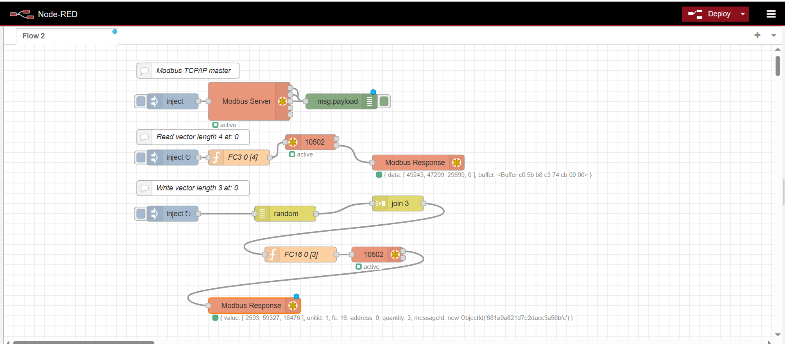

Node-RED Modbus TCP/IP Flow
What is Node-RED? Node-RED is an open-source, flow-based programming tool built on Node.js, designed for wiring together hardware devices, APIs, and online services. Its visual editor allows users to create flows by connecting nodes, making it ideal for IoT, automation, and industrial applications like Modbus communication. In this project, Node-RED enables seamless Modbus TCP/IP interaction for industrial control simulations.
This project demonstrates Modbus TCP/IP communication between a client (master) and a server (slave) running on localhost, using the node-red-contrib-modbus package to simulate industrial control scenarios.
Flow Description
- Modbus Server (Slave): Listens on port
10502with 1024 buffers for coils, input registers, and holding registers. It responds to client requests with a 100 ms delay to simulate realistic server behavior. - Modbus Client (Master): Connects to
localhost:10502and performs two operations:- Read (FC3): Every 5 seconds, reads 4 holding registers starting at address 0, retrieving their current values.
- Write (FC16): Every 1 second, writes 3 random values (0–65535) to holding registers starting at address 0, updating the server’s state.
- Operation: The client writes random values to the server’s registers, which are read back in the next read cycle, demonstrating a complete communication loop. This setup mimics real-world industrial control systems.
Flow Diagram
Output Example
The output displays the values read from the holding registers and confirmation of write operations, visualized in the Node-RED interface. This shows the dynamic updating of register values over time.